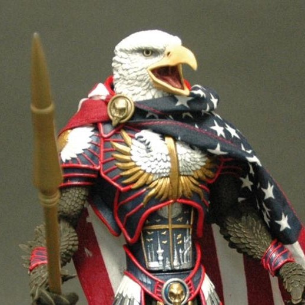
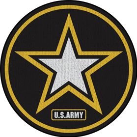

My Story:
-

1995-
Greater Chicago Area
Stephen, raised in the suburbs of Chicago, is an aspiring technologist. Problem solver at heart, he took to programming as a career. Though he plans on using skills he is acquiring in college for better purposes than just programming.
-
June 2009-Present
Civil Air Patrol
One of the first ways Stephen gave back to his community was through volunteer work. He currently helps at a local Civil Air Patrol squadron as a Search and Rescue trainer and a Ground Team Leader for Search and Rescue Operations.
-
2010 - 2014
Travels
Part of being in the Civil Air Patrol is attending encampments and training camps as a cadet. During that time as a cadet Stephen visited multiple camps. His favorite was Cadet Officer School. He learned what it meant to be a leader at Maxwell Air Force Base Gunter Annex.
-

Fall 2011
Graduation #1
After completing his Hichschool curiculum Stephen moved from doing school at his house to commuting to a college. He Admitted himself into the Elgin Community College to work on his first Degree. Making it a general degree so that he would have freedom moving forwards!
-

January 2014
BootCamp
After graduating with an Associates in Science, Stephen was not quite sure what he wanted to do. So without wasting any time he visited the Army recruiters. After scoring a 90 on his ASVAB and doing his research he settled on the Illinois Army National Guard as an Information Technologies Specialist.
-

July 2014,
December 2014Graduation #2 + 3
Ten weeks of physically strenuous training, and Stephen was done with Basic Training (bootcamp). Next was AIT (Advanced Individualized Training). 20 weeks of IT training. Altogether Stephen was away for military duties a total of 6 months.
-

April 2015 - Present
University
Stephen is currently working on his Bachelor's degree in Computing Science. Currently a Senior, he has gained a decent amount of knowledge with multiple different programming languages, and the logic required to program.
-
Spring '17
CS251 TA
During the Spring Semester of 2017 Stephen held a TA position for CS251 while working on his studies at UIC.
-

Summer '17
nBotix
Spring Break of 2017 Stephen studied a software named Blueprism. This gave him the oppurtunity to get hired as a junior developer at nBotix. He quickly showed his worth and was promoted to Training Developer. Before the internship was done Stephen was sent to Dallas Texas to train a nBotix partner how to think about Process flows in relation to Robotic Process Automation.
-
Fall '17
CS211
Currently Stephen is holding a TA position for CS211 while continuing his studies at UIC.
-
Always
Moving
Forwards